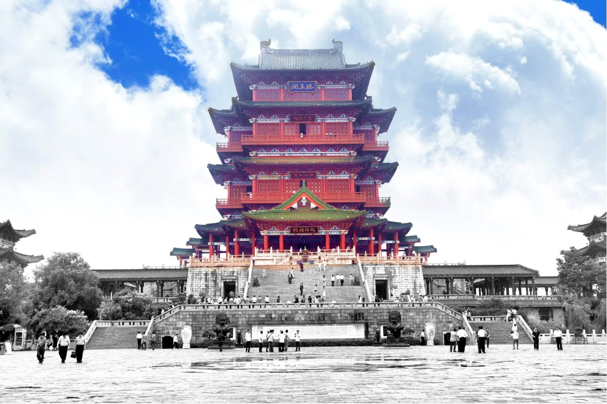

滕王阁景区简介
滕王阁素有“西江第一楼”之美誉，江西南昌滕王阁坐落于赣江与抚河故道交汇处。依城临江，瑰伟绝特，滕王阁与湖北黄鹤楼、湖南岳阳楼为并称为“江南三大名楼。一首《滕王阁序》而让滕王阁名扬天，王勃的《滕王阁序》，脍炙人口，传诵千秋。文以阁名，阁以文传，历千载沧桑而经久不衰。
滕王阁，建于唐永徽四年（653年），后来重建高达29次，滕王阁是唐高祖李渊之子李元婴任洪州都督时创建的。李元婴出生早帝王之家，受到宫廷生活熏陶，“工书画，妙音律，喜蝴蝶，选芳渚游，乘青雀舸，极亭榭歌舞之盛。”据史书记载，永徽三年（652年），李元婴迁苏州刺史，调任洪州都督时，从苏州带来一班歌舞乐伎，终日在都督府里盛宴歌舞。后来又临江建此楼阁为别居，实乃歌舞之地。因李元婴在贞观年间曾被封为滕王，故阁以“滕王”一名冠名之。
江西南昌滕王阁是江西南昌吉祥风水建筑，有古谣云：“藤断葫芦剪，塔圮豫章残。”“藤”谐“滕”音，指滕王阁；“葫芦”，乃藏宝之物；“塔”，指绳金塔；“圮”，倒塌之意；“豫章”亦即南昌。这首古谣的意思是，如果滕王阁和绳金塔倒塌，豫章城中的人才与宝藏都将流失，城市亦将败落，不复繁荣昌盛。在我国古代习俗中，人口聚居之地需要风水建筑。一般为当地最高标志性建筑，聚集天地之灵气，吸收日月之精华，俗称：“文笔峰”，滕王阁坐落于赣水之滨，被古人誉为“水笔”。有古人亦云：“求财去万寿宫，求福去滕王阁”。可见滕王阁在世人心目中占据着的神圣地位，备受重视和保护。
现在的滕王阁是仿宋的建筑风格。唐宋本是一脉相承的，宋代建筑风格是唐代建筑风格的继承与发展。宋代的楼阁建筑风格极窈窕多姿，建筑艺术造型达到极高成就。1942年，古建大师梁思成偕其弟子莫宗江根据“天籁阁”旧藏宋画绘制了八幅《重建滕王阁计划草图》。在第29次重建之时，建筑师们以此作为依据，并参照宋代李明仲的《营造法式》（此书相当于现在的建筑规范），设计了这座仿宋式的雄伟楼阁。1983年10月1日举行了奠基大典，1985年10月22日重阳节正式开工。在庆祝中华人民共和国成立四十周年之际，第二十九次重建的滕王阁于1989年10月8日重阳节胜利建成，这不仅是给古城南昌增色添辉，并以其特有的魅力，吸引着中外游人。滕王阁是南昌的骄傲，是豫章古文明的象征，真乃中华民族文化遗产之瑰宝啊。